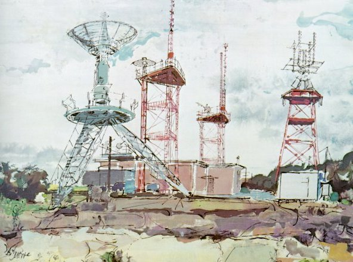

In the 1950s, when the U.S.S.R. demonstrated rocket engines powerful enough to carry
atomic weapons over intercontinental distances, it became clear to United States
and free world political and military leaders that we had to add technological
strength in rocketry and know-how in the use of space systems to our defense base if
we were to play a decisive role in world affairs.

Alfred McAdams, RANGE SAFETY, watercolor on paper.
From here a straying rocket would be destroyed.
In the United States the first decision was to give this job to our military services.
They did it well. Atlas, Titan, Minuteman, and Polaris missiles rapidly added rocket
power to the basic air and atomic power that we were pledged to use to support
longheld objectives of world stability, peace, and progress.
The establishment of the Atomic Energy Commission as a civilian agency had
emphasized in the 1940s our hope that nuclear technology could become a major force
for peaceful purposes as well as for defense. In 1958 the establishment of the
National Aeronautics and Space Administration, again as a civilian agency, emphasized
our hope that space could be developed for peaceful purposes.
NASA was specifically charged with the expansion into space of our high level
of aeronautical know-how. It was made responsible for research and development that
would both increase our space know-how for military use, if needed, and would enlarge
our ability to use space in cooperation with other nations for "peaceful purposes
for the benefit of all mankind."